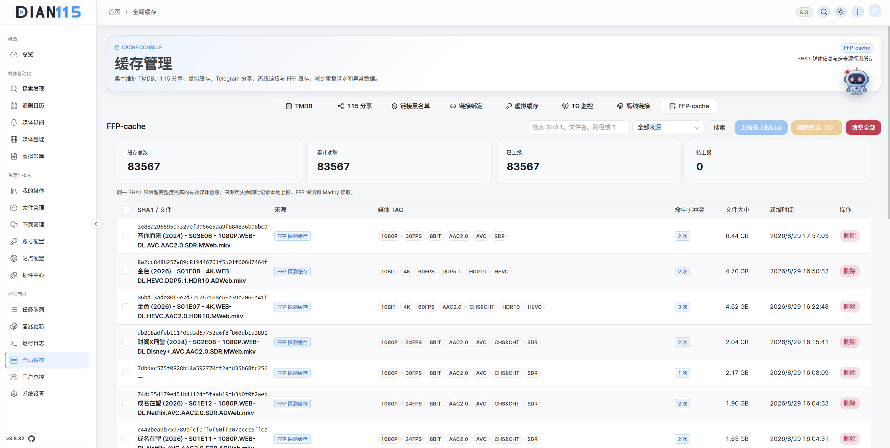

音乐代理
- 配置 Navidrome 后端、Subsonic 用户名/密码和独立代理端口。
- 选择主账号对应的 CD2 音乐源路径与本地软链接路径。
- 支持实时监听 115 生活事件、定时增量或全量同步。
- 支持 302 失败回退本地代理，以及删除时清理软链接和空目录。
FEATURES · PART 3
恢复原页面后六个模块：DianCupLite 容器更新、全局与 FFP 缓存、门户、音乐代理与播放器、AI 助手，以及追剧日历、下载管理和任务日志。
DianCupLite 在不使用特权模式的前提下管理本机其他容器。
挂载 Docker Socket 后，DianCupLite 能读取容器和镜像摘要，检查远端更新，按队列执行手动或定时更新，并提供运行状态与资源视图。
/var/run/docker.sock，不需要特权模式和宿主机根目录映射。更新会造成短暂停机。媒体扫描、数据库写入、做种和分享任务运行时不要批量更新；先备份配置，再逐个验证关键服务。

减少重复外部请求，让同一 SHA1 的媒体信息跨功能复用。
| 缓存 | 保存内容 | 主要价值 |
|---|---|---|
| TMDB | 媒体元数据与海报索引 | 加快探索、订阅与识别。 |
| 115 分享 | 分享码、质量与有效性 | 避免反复解析，跟踪失效状态。 |
| TG 监控分享 | 频道采集的分享链接 | 频道去重、资源状态和订阅复用。 |
| 离线链接 | 磁力与 ED2K 记录 | 避免重复提交与解析。 |
| FFP-cache | 按 SHA1 索引的容器、媒体流、章节与技术字段 | 整理、洗版、ED2K、画像与远端上报复用。 |
缓存不是数据源。当媒体路径、站点认证或分享内容已变化时，刷新对应缓存再验证，不要用“清空全部缓存”代替配置排查。

为家庭、朋友或小型社区提供独立用户入口与运营后台。
门户把管理员和终端用户分开。管理员维护用户、共享/独享 115 账号、邀请码、求片、工单、数据健康和社区；用户通过门户完成播放、请求与账户操作。
管理员可生成共享或独享模式邀请码。当前实现为固定 14 位、一码一用、4 天有效。共享模式复用池账号；独享模式由用户绑定自己的 115 账户，配额与风险隔离不同。
门户涉及用户账号、115 CK、播放缓存、工单和社区内容。对外开放前使用 HTTPS、强密码、最小端口和定期备份，管理后台不要共享弱口令。
把 115 音乐目录映射到 Navidrome / Subsonic，并在 DIAN115 内直接播放。
音乐树只使用主账号云盘。CD2 路径必须与“账号配置 → 扩展设置”中的主账号云盘一致。
既能解释系统状态，也能在授权范围内调用 DIAN115 管理工具。
AI 助手与会话助手和音乐共享浮动入口，支持流式回复、推理过程、工具进度、Markdown、复制、停止生成、新会话与本地历史。
配置 Fine-grained PAT 后，AI 可在 /dian115AI 工作区拉取、检查、修改、暂存、提交和推送仓库，也可访问 Issue、PR、Release 与 Actions。Token 只交给后端加密保存，不应进入 AI 上下文、Git URL、命令参数或日志。
管理模式具备真实操作能力。不要要求 AI 输出 Cookie、Token、密码、安全码或 API Key；后台工具会脱敏并排除高风险通用接口。
除重点模块外，日常使用还会频繁用到这些能力。
按日期查看订阅剧集的播出与更新，区分尚未播出、未找到、下载未完成和入库缺集。
维护 qBittorrent / Transmission 连接和任务。先测试 WebUI、账号、默认下载器与保存路径。
查看整理、转存、分享、秒传、字幕、STRM 与插件任务的阶段、进度和失败原因。
按任务 ID、规则、路径、账号和站点定位问题；依次测试代理、FlareSolverr、Telegram、TMDB 与 115。
| 页面 | 入口 | 用途 |
|---|---|---|
| 追剧日历 | /automation/calendar | 查看订阅剧集播出和更新。 |
| 下载管理 | /resources/downloads | 下载器连接、任务与保存路径。 |
| 任务队列 | /control/jobs | 后台任务进度、详情与错误日志。 |
| 运行日志 | /control/logs | 实时日志与跨功能排障。 |
| 系统设置 | /control/settings | CD2、代理、FlareSolverr、Webhook、AI 与安全。 |
升级后先检查新增配置项和依赖，再恢复整理、订阅、刷流等批量任务。